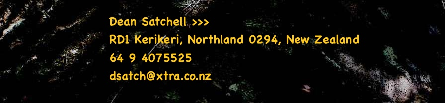

|
|
| Biological control projects Cleobora mellyi, the Southern ladybird Serangium maculigerum, Whitefly predator Orius vicinus, Pirate bug Soldier bugs: Cermatulus nasalis Brown soldier bug Oechalia schellenbergii Schellenberg's soldier bug home |
 |
|  | |